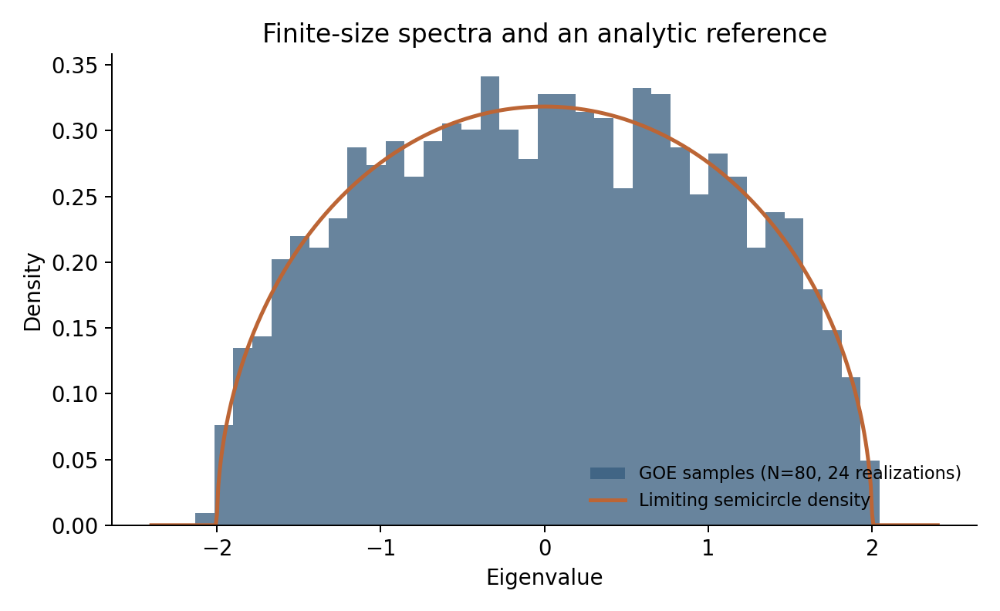

Each project connects a research question to a result, a computational entry point, and the checks needed to interpret it. Published findings and public example code are identified separately.
Julia · ITensors · DMRG
Precision calculations in the Schwinger model
1. Problem
Locate a quantum critical point despite finite-size effects and tensor-network truncation errors.
2. Result
The related coauthored study reports systems up to 3,000 qubits, a critical mass determined to five digits, and agreement among four criticality criteria. These are classical simulations using compressed states. Read the paper.
Inspect state overlaps, check small systems against reference solutions, and establish convergence with sweep count and bond dimension before finite-size extrapolation.
Distinguish finite-sample noise from collective structure in matrix spectra, including empirical financial correlations.
2. Result
A small offline example samples 1,920 GOE eigenvalues; the mean squared eigenvalue is 1.0202 against a finite-size expectation of 1.0125. The saved finance notebook separately identifies five candidate spectral outliers in a 48-asset, 100-observation window.
3. Reproduce
The offline quickstart runs without market-data access and records its seed, software versions, and numerical diagnostics.
4. Validation
The quickstart checks symmetry and eigenpair residuals. Financial outliers are exploratory observations; the repository does not claim out-of-sample forecasting or trading performance.
5. Methods
GOE/GUE ensembles, semicircle and Marchenko–Pastur reference laws, covariance eigendecomposition, and spectral statistics. Notebooks and references.

Seeded offline example: 24 matrices of size 80. The analytic curve is an asymptotic reference.
Julia · Tensor networks · Numerical linear algebra
Low-energy spectra of quantum lattice models
1. Problem
Compute low-energy states while controlling the exponential growth of a quantum system's Hilbert space.
2. Result
The 20-site Ising example computes five low-energy states and reports energies, symmetry expectations, normalization, and pairwise overlaps. Related Yang–Lee research compares spectra with conformal predictions in several dimensions.
State diagnostics and convergence checks support interpretation. Non-Hermitian problems require separate treatment of left and right eigenvectors. No hardware speedup is claimed.
5. Methods
Matrix product states and operators, DMRG, conserved sectors, and excited-state penalties using ITensorMPS. Code and model notes.